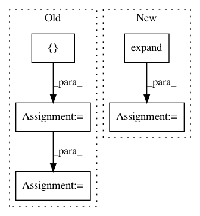

87d57a3d34a1eef2c6ad5519741710e3321f136c,DialogueRNN/model.py,BiE2EModel,forward,#BiE2EModel#Any#Any#Any#,304
Before Change
//emotions = emotions.unsqueeze(1)
if att2:
att_emotions = []
alpha = []
for t in emotions:
att_em, alpha_ = self.matchatt(emotions,t,mask=umask)
att_emotions.append(att_em.unsqueeze(0))
alpha.append(alpha_[:,0,:])
att_emotions = torch.cat(att_emotions,dim=0)
hidden = F.relu(self.linear(att_emotions))
else:
hidden = F.relu(self.linear(emotions))
//hidden = F.relu(self.linear2(hidden))
After Change
qmask = qmask.unsqueeze(1).expand(-1, T1.size(1), -1)
umask = torch.FloatTensor([1,1,1]).type(T1.type())
umask = umask.expand(-1, T1.size(1))
emotions_f, alpha_f = self.dialog_rnn_f(U, qmask) // seq_len, batch, D_e
emotions_f = self.dropout_rec(emotions_f)
rev_U = self._reverse_seq(U, umask)
In pattern: SUPERPATTERN
Frequency: 3
Non-data size: 5
Instances
Project Name: SenticNet/conv-emotion
Commit Name: 87d57a3d34a1eef2c6ad5519741710e3321f136c
Time: 2019-03-19
Author: 40890991+soujanyaporia@users.noreply.github.com
File Name: DialogueRNN/model.py
Class Name: BiE2EModel
Method Name: forward
Project Name: rusty1s/pytorch_geometric
Commit Name: b48c943b9f6248dbdd42d0fce44658b937098372
Time: 2017-10-23
Author: matthias.fey@tu-dortmund.de
File Name: torch_geometric/nn/functional/spline_gcn.py
Class Name:
Method Name: spline_gcn
Project Name: ixaxaar/pytorch-dnc
Commit Name: 2026a8939d9ccc3e26ac776db5b4788846fd166c
Time: 2017-12-03
Author: root@ixaxaar.in
File Name: dnc/sparse_memory.py
Class Name: SparseMemory
Method Name: read_from_sparse_memory